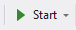

Create a simple class (program) : Hello World
In this section we will create a new class that displays text in a message box
How to:
- Go to the northwind project, click right Add/New Folder and call it Training.
- On this folder, right click again Add/New Item
In the left panel choose Visual C# Items,
From the Middle panel choose Class for example,
Name the class HelloWorld.cs at the bottom
Click the Add button - The Using section at the top of your code is not necessary. you can remove it.
- Write the below code inside the HellowWorld class as shown below
namespace Northwind.Training
{
class HelloWorld
{
public void Run()
{
System.Windows.Forms.MessageBox.Show("Hello World");
}
}
}
- The class is ready to use, let's call it from the menu
Go to Views Folder and go to ApplicationMdi.cs and double click on it
Click on an empty area on the menu bar, type Training and under Training type a sub-menu Hello World
Double click on it and here we will right the code to call the new class as follows
private void helloWorldToolStripMenuItem_Click (object sender, System.EventArgs e)
{
new Training.HelloWorld().Run();
}
- Build - Build menu / Build solution
- Run by pressing the Start button and call the program from the menu 